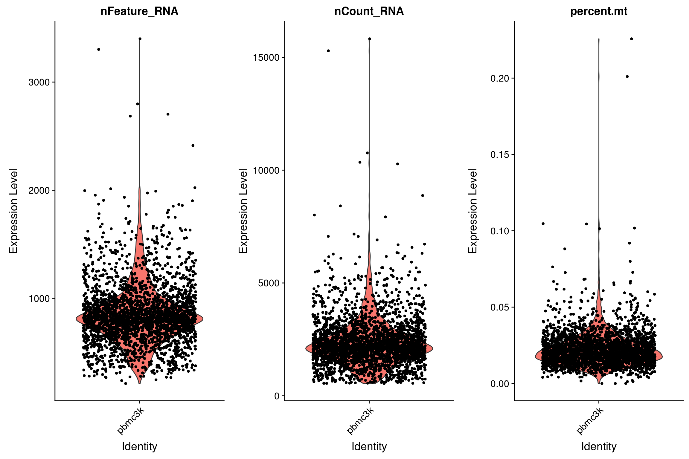
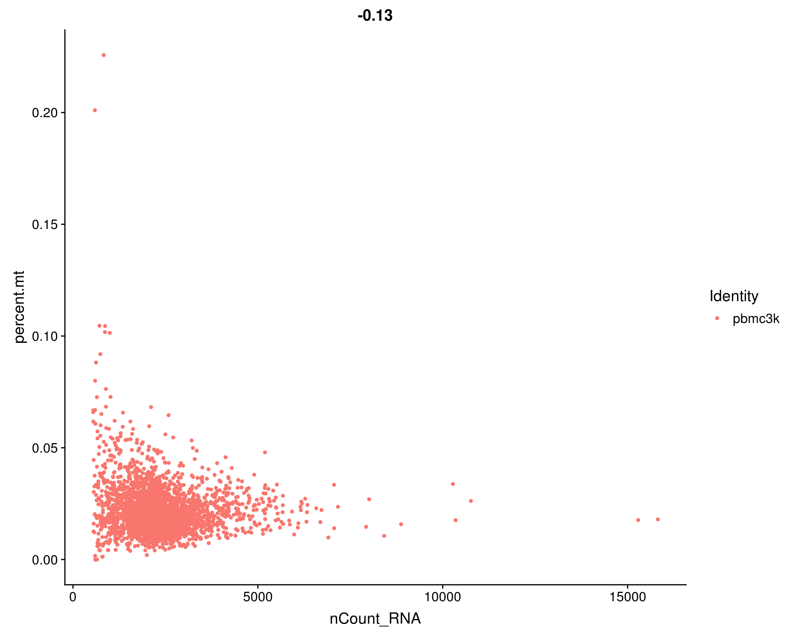
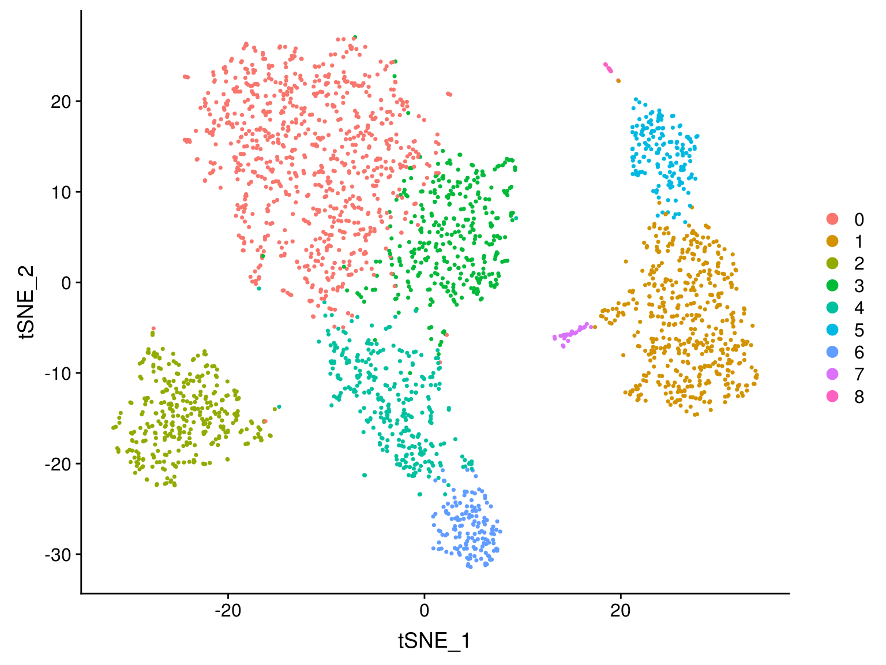
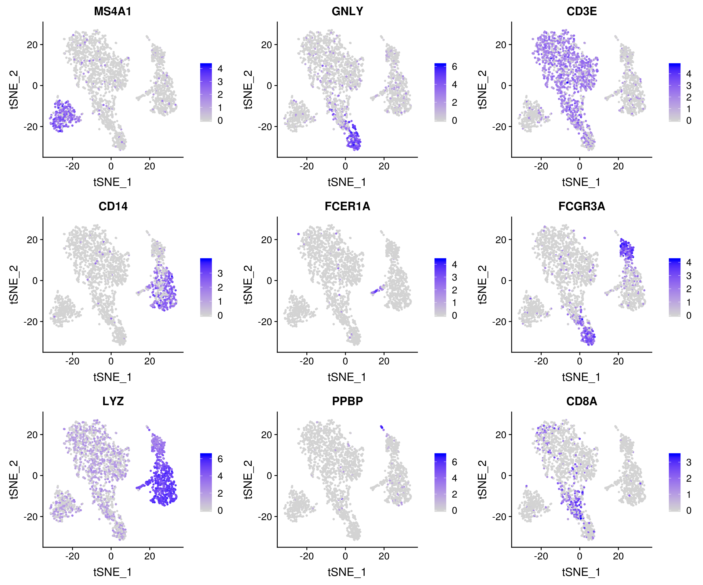

Last updated: 2019-05-10
Checks: 6 0
Knit directory: 190510-scWorkshop/
This reproducible R Markdown analysis was created with workflowr (version 1.3.0). The Checks tab describes the reproducibility checks that were applied when the results were created. The Past versions tab lists the development history.
Great! Since the R Markdown file has been committed to the Git repository, you know the exact version of the code that produced these results.
Great job! The global environment was empty. Objects defined in the global environment can affect the analysis in your R Markdown file in unknown ways. For reproduciblity it’s best to always run the code in an empty environment.
The command set.seed(20190507) was run prior to running the code in the R Markdown file. Setting a seed ensures that any results that rely on randomness, e.g. subsampling or permutations, are reproducible.
Great job! Recording the operating system, R version, and package versions is critical for reproducibility.
Nice! There were no cached chunks for this analysis, so you can be confident that you successfully produced the results during this run.
Great! You are using Git for version control. Tracking code development and connecting the code version to the results is critical for reproducibility. The version displayed above was the version of the Git repository at the time these results were generated.
Note that you need to be careful to ensure that all relevant files for the analysis have been committed to Git prior to generating the results (you can use wflow_publish or wflow_git_commit). workflowr only checks the R Markdown file, but you know if there are other scripts or data files that it depends on. Below is the status of the Git repository when the results were generated:
Untracked files:
Untracked: data/filtered_gene_bc_matrices/
Untracked: data/pbmc3k_filtered_gene_bc_matrices.tar.gz
Untracked: output/seu_pbmc_tutorial.rds
Note that any generated files, e.g. HTML, png, CSS, etc., are not included in this status report because it is ok for generated content to have uncommitted changes.
These are the previous versions of the R Markdown and HTML files. If you’ve configured a remote Git repository (see ?wflow_git_remote), click on the hyperlinks in the table below to view them.
| File | Version | Author | Date | Message |
|---|---|---|---|---|
| Rmd | 7aa71e4 | JonThom | 2019-05-10 | wflow_publish(“./analysis/analysis.Rmd”) |
| html | 1d5ea1f | JonThom | 2019-05-10 | Build site. |
| Rmd | 0b4f952 | JonThom | 2019-05-10 | wflow_publish(“./analysis/analysis.Rmd”) |
| html | 966c250 | JonThom | 2019-05-10 | Build site. |
| Rmd | 6acaec4 | JonThom | 2019-05-10 | publish |
| html | 1bfc8f1 | JonThom | 2019-05-10 | Build site. |
| Rmd | 080696f | JonThom | 2019-05-10 | wflow_publish(“./analysis/analysis.Rmd”) |
| html | 7c8ff3e | JonThom | 2019-05-10 | Build site. |
| Rmd | 9934dbb | JonThom | 2019-05-10 | publish |
| html | 11811b9 | JonThom | 2019-05-09 | Build site. |
| Rmd | 25d1dfc | JonThom | 2019-05-09 | working draft |
| html | ed6f27a | JonThom | 2019-05-09 | Build site. |
| html | fcf3e91 | JonThom | 2019-05-09 | Build site. |
| Rmd | eb3e7f5 | JonThom | 2019-05-09 | wflow_publish(files = “./analysis/analysis.Rmd”) |
| html | 129883b | JonThom | 2019-05-07 | Build site. |
| Rmd | a906718 | JonThom | 2019-05-07 | add first analysis file |
A lightly adapted and annotated version of Satija et al, Guided Clustering Tutorial (2019)
This tutorial covers the standard steps of QC, pre-processing and selecting features (genes), reducing the dimensionality of your dataset, clustering cells, and finding differentially expressed features.
Seurat has many other tools, notably for integrating different datasets, which other presenters will cover today.
Download the script for this tutorial at github
install and load packages
pkgs_required <- c("Seurat", "dplyr")
pkgs_new <- pkgs_required[!(pkgs_required %in% installed.packages()[, "Package"])]
if (length(pkgs_new)>0) install.packages(pkgs_new)
suppressPackageStartupMessages(library(Seurat))
suppressPackageStartupMessages(library(dplyr))Set standard options
options(warn=1, stringsAsFactors = F)Define constants
# Define random seed for reproducibility
randomSeed = 12345
set.seed(seed=randomSeed)For this tutorial, we will be analyzing the a dataset of Peripheral Blood Mononuclear Cells (PBMC) freely available from 10X Genomics. There are 2,700 single cells that were sequenced on the Illumina NextSeq 500 and aligned to the human genome using Cell Ranger.
Seurat takes as input a gene (row) * cell (column) matrix of transcript counts.
The Read10X function reads in the output of the cellranger pipeline from 10X, returning a unique molecular identified (UMI) count matrix.
Seurat also provides the function ReadAlevin for loading the binary format matrix produced by the Alevin tool from the Salmon software.
Cell Ranger, inspect the outputs carefully to see if the cut for calling barcodes as cells seems reasonable. If not, consider using the unfiltered matrix and filtering manually e.g. on a minimum number of RNA counts per cell.# Load the PBMC dataset
pbmc.data <- Read10X(data.dir = "/projects/jonatan/applied/190510-scWorkshop/data/filtered_gene_bc_matrices/hg19/")We next use the count matrix to create a Seurat object, which serves as a container for data (like the count matrix) and analysis (like PCA, or clustering results).
# Initialize the Seurat object with the raw (non-normalized data).
pbmc <- suppressWarnings({
CreateSeuratObject(counts = pbmc.data,
project = "pbmc3k",
min.cells = 3, # set minimum number of cells for genes
min.features = 200) # set minimum number of features (genes) for cells
})
pbmcAn object of class Seurat
13714 features across 2700 samples within 1 assay
Active assay: RNA (13714 features)Seurat provides convenience functions to access data in the object:
GetAssayData(pbmc, slot="counts")[0:5,0:3]5 x 3 sparse Matrix of class "dgCMatrix"
AAACATACAACCAC AAACATTGAGCTAC AAACATTGATCAGC
AL627309.1 . . .
AP006222.2 . . .
RP11-206L10.2 . . .
RP11-206L10.9 . . .
LINC00115 . . .In addition, you can always access any slot in the object using the ‘@’ and ‘$’ operators:
pbmc@assays$RNA@counts[0:5,0:3]5 x 3 sparse Matrix of class "dgCMatrix"
AAACATACAACCAC AAACATTGAGCTAC AAACATTGATCAGC
AL627309.1 . . .
AP006222.2 . . .
RP11-206L10.2 . . .
RP11-206L10.9 . . .
LINC00115 . . .For a technical discussion of the Seurat object structure, check out the GitHub Wiki.
Seurat allows you to easily explore QC metrics and filter cells based on any user-defined criteria.
A few QC metrics commonly used by the community include
mito.genes <- grepl(pattern = "^mt-", x = rownames(pbmc), ignore.case=T)
mat_counts <- GetAssayData(object = pbmc, assay="RNA", slot = "counts") %>% as.matrix
colSums_tmp <- colSums(x = mat_counts)
pbmc[["percent.mt"]] = colSums(x = mat_counts[mito.genes,])/colSums_tmp
head(pbmc@meta.data) orig.ident nCount_RNA nFeature_RNA percent.mt
AAACATACAACCAC pbmc3k 2419 779 0.030177759
AAACATTGAGCTAC pbmc3k 4903 1352 0.037935958
AAACATTGATCAGC pbmc3k 3147 1129 0.008897363
AAACCGTGCTTCCG pbmc3k 2639 960 0.017430845
AAACCGTGTATGCG pbmc3k 980 521 0.012244898
AAACGCACTGGTAC pbmc3k 2163 781 0.016643551# Visualize QC metrics as a violin plot
VlnPlot(pbmc,
features = c("nFeature_RNA", "nCount_RNA", "percent.mt"),
ncol = 3)
# FeatureScatter is typically used to visualize feature-feature relationships, but can be used
# for anything calculated by the object, i.e. columns in object metadata, PC scores etc.
FeatureScatter(pbmc, feature1 = "nCount_RNA", feature2 = "percent.mt")
# plot1 <- FeatureScatter(pbmc, feature1 = "nCount_RNA", feature2 = "percent.mt")
# plot2 <- FeatureScatter(pbmc, feature1 = "nCount_RNA", feature2 = "nFeature_RNA")
# CombinePlots(plots = list(plot1, plot2))pbmc <- subset(pbmc,
subset = nFeature_RNA > 200 &
nFeature_RNA < 2500 &
percent.mt < 0.05)
head(pbmc@meta.data) orig.ident nCount_RNA nFeature_RNA percent.mt
AAACATACAACCAC pbmc3k 2419 779 0.030177759
AAACATTGAGCTAC pbmc3k 4903 1352 0.037935958
AAACATTGATCAGC pbmc3k 3147 1129 0.008897363
AAACCGTGCTTCCG pbmc3k 2639 960 0.017430845
AAACCGTGTATGCG pbmc3k 980 521 0.012244898
AAACGCACTGGTAC pbmc3k 2163 781 0.016643551After removing unwanted cells from the dataset, the next step is to normalize the data.
By default, we employ a global-scaling normalization method LogNormalize that
Normalized values are stored in pbmc@assays$RNA@data.
pbmc <- NormalizeData(pbmc,
normalization.method = "LogNormalize",
scale.factor = 10000)
pbmc@assays$RNA@data[10000:10005,0:3]6 x 3 sparse Matrix of class "dgCMatrix"
AAACATACAACCAC AAACATTGAGCTAC AAACATTGATCAGC
HDGFRP3 . . .
ZSCAN2 . . .
WDR73 . . .
NMB . . .
SEC11A 1.635873 . 1.429744
ZNF592 . . . We next calculate a subset of features that exhibit high cell-to-cell variation in the dataset (i.e, they are highly expressed in some cells, and lowly expressed in others). Satija et al and others have found that focusing on these genes in downstream analysis helps to highlight biological signal in single-cell datasets.
Problem: gene expression variance tends to correlate highly with the mean expression, leading to a bias towards selecting highly expressed genes
Variance Stabilizing Transformation (vst):
pbmc <- FindVariableFeatures(pbmc,
selection.method = "vst",
nfeatures = 2000)# Identify the 10 most highly variable genes
top10 <- head(VariableFeatures(pbmc), 10)
# plot variable features with and without labels
plot1 <- VariableFeaturePlot(pbmc)
plot2 <- LabelPoints(plot = plot1, points = top10, repel = TRUE)When using repel, set xnudge and ynudge to 0 for optimal resultsCombinePlots(plots = list(plot1, plot2))Warning: Transformation introduced infinite values in continuous x-axis
Warning: Transformation introduced infinite values in continuous x-axis
| Version | Author | Date |
|---|---|---|
| fcf3e91 | JonThom | 2019-05-09 |
Next, as a standard pre-processing step prior to dimensional reduction techniques like PCA, we center and scale each gene’s expression
In addition, the ScaleData function optionally also ‘regresses out’ effects of given confounders, such as the number of RNA molecules or the proportion of mitochrondrial RNA Hafemeister (2017). However one should proceed with caution, in case the ‘confounder’ is correlated with biological variables of interest.
The results of this are stored in pbmc@assays$RNA@scale.data
Note:
pbmc@assays$RNA@data) or raw counts (pbmc@assays$RNA@counts)pbmc <- ScaleData(pbmc,
verbose = T,
vars.to.regress = c("nCount_RNA", "percent.mt"))Regressing out nCount_RNA, percent.mtScaling data matrixpbmc@assays$RNA@scale.data[0:5,0:3] AAACATACAACCAC AAACATTGAGCTAC AAACATTGATCAGC
PPBP -0.1521894 -0.03564544 -0.08450815
LYZ -0.2679889 -0.82318984 0.08203817
S100A9 -0.8027624 -1.21493665 -0.55611741
IGLL5 -0.1949180 -0.12315643 -0.13727433
GNLY -0.4260540 -0.21637331 0.85483132?ScaleData), the function by default scales only highly variable genesdim(pbmc@assays$RNA@scale.data)[1] 2000 2638If you wish to use all genes for PCA, pass the argument features = rownames(pbmc)
Next we perform Principal Component Analysis (PCA) on the scaled data.
By default, only the highly variable features are used to compute PCA, but can be defined using features argument if you wish to choose a different subset (such as all genes), providing that you have run ScaleData on these genes.
seed.use argument for reproducibility.pbmc <- RunPCA(pbmc,
npcs=30, #number of principal components
features = VariableFeatures(object = pbmc),
verbose=F,
#ndims.print = 1:3, # number of PCs to print
#nfeatures.print = 10, # number of highly loading genes to print
seed.use=randomSeed)DimPlot(pbmc, reduction = "pca")
| Version | Author | Date |
|---|---|---|
| fcf3e91 | JonThom | 2019-05-09 |
Seurat clusters cells based on their PCA scores. How many components should we use? 10? 20? 50?
Seurat provides three approaches to selecting the number of PCs:
JackStraw: use a statistical test based on a random null model to determine which PCs capture ‘real’ variation versus noise. Time-consuming but unsupervised and rigourous.ElbowPlot: Use an elbbow plot to select PCs that explain most of the variance in the dataset. A fast heuristic that is commonly used.Seurat provides several useful ways of visualizing both cells and features that define the PCA, including VizDimLoadings, VizDimReduction, DimPlot, and DimHeatmap
VizDimLoadings(pbmc, dims = 1:2, reduction = "pca")
| Version | Author | Date |
|---|---|---|
| fcf3e91 | JonThom | 2019-05-09 |
DimHeatmap plots expression levels in cells and features, ordered according to their PCA scores. The function plots the ‘extreme’ cells on both ends of the spectrum.
DimHeatmap(pbmc, dims = 1:15, cells = 500, balanced = TRUE)
| Version | Author | Date |
|---|---|---|
| fcf3e91 | JonThom | 2019-05-09 |
In Macosko et al the authors implemented a resampling test inspired by Chung et al, Bioinformatics (2014)
For each gene
# NOT RUN
pbmc <- JackStraw(pbmc,
num.replicate = 100)pbmc <- ScoreJackStraw(pbmc,
dims = 1:20)The JackStrawPlot function provides a visualization tool for comparing the distribution of p-values for each PC with a uniform distribution (dashed line). ‘Significant’ PCs will show a strong enrichment of features with low p-values (solid curve above the dashed line). In this case it appears that there is a sharp drop-off in significance after the first 10-12 PCs.
JackStrawPlot(pbmc, dims = 1:15)Warning: Removed 23369 rows containing missing values (geom_point).
| Version | Author | Date |
|---|---|---|
| fcf3e91 | JonThom | 2019-05-09 |
‘Elbow plot’: shows the percentage of variance explained by each PC. In this example, we can observe an ‘elbow’ around PCs 9-10, suggesting that the majority of true signal is captured in the first 10 PCs.
ElbowPlot(pbmc)
| Version | Author | Date |
|---|---|---|
| fcf3e91 | JonThom | 2019-05-09 |
In this example, all three approaches yielded similar results, but we might have been justified in choosing anything between PC 7-12 as a cutoff.
We chose 10 here, but consider the following:
Seurat v3 applies a graph-based clustering approach, building upon initial strategies in (Macosko et al). Importantly, the distance metric which drives the clustering analysis (based on previously identified PCs) remains the same. However, our approach to partioning the cellular distance matrix into clusters has dramatically improved. Our approach was heavily inspired by recent manuscripts which applied graph-based clustering approaches to scRNA-seq data SNN-Cliq, Xu and Su, Bioinformatics, 2015 and CyTOF data PhenoGraph, Levine et al., Cell, 2015. Briefly, these methods embed cells in a graph structure - for example a K-nearest neighbor (KNN) graph, with edges drawn between cells with similar feature expression patterns, and then attempt to partition this graph into highly interconnected ‘quasi-cliques’ or ‘communities’.
As in PhenoGraph, we first construct a KNN graph based on the euclidean distance in PCA space, and refine the edge weights between any two cells based on the shared overlap in their local neighborhoods (Jaccard similarity). This step is performed using the FindNeighbors function, and takes as input the previously defined dimensionality of the dataset (first 10 PCs).
To cluster the cells, we next apply modularity optimization techniques such as the Louvain algorithm (default) or SLM SLM, Blondel et al., Journal of Statistical Mechanics, to iteratively group cells together, with the goal of optimizing the standard modularity function.
The FindClusters function, which implements this procedure, contains a resolution parameter that sets the ‘granularity’ of the downstream clustering, with increased values leading to a greater number of clusters.
pbmc <- FindNeighbors(pbmc,
dims = 1:10) # use 10 Principal ComponentsComputing nearest neighbor graphComputing SNNpbmc <- FindClusters(pbmc,
resolution = 0.5) Modularity Optimizer version 1.3.0 by Ludo Waltman and Nees Jan van Eck
Number of nodes: 2638
Number of edges: 157834
Running Louvain algorithm...
Maximum modularity in 10 random starts: 0.8590
Number of communities: 9
Elapsed time: 0 seconds# Look at cluster IDs of the first 5 cells
head(Idents(pbmc), 5)AAACATACAACCAC AAACATTGAGCTAC AAACATTGATCAGC AAACCGTGCTTCCG AAACCGTGTATGCG
0 2 3 1 6
Levels: 0 1 2 3 4 5 6 7 8Seurat offers several non-linear dimensional reduction techniques to visualize and explore these datasets, including
As input to the UMAP and tSNE, use the same PCs as used for the clustering analysis (here, the first 10)
For tSNE, the perplexity parameter (defaults to 30) has a large impact on the final plot. For a great discussion see Watternberg et al, 2016
As with RunPCA, specifying seed.use makes the reduction reproducible
# use tSNE because UMAP isn't installed :)
pbmc <- RunTSNE(pbmc,
dims = 1:10,
seed.use=randomSeed,
perplexity=30,
check_duplicates=F) # if not specified the function fails if two cells share coordinates# note that you can set `label = TRUE` or use the LabelClusters function to help label
# individual clusters
DimPlot(pbmc,
reduction = "tsne")
Seurat can help you find markers that define clusters via differential expression.
FindAllMarkers automates this process for all clusters, but you can also test groups of clusters vs. each other, or against all cells.
Seurat has several tests for differential expression which can be set with the test.use parameter (see our DE vignette for details).
Note that:
FindClusters identifies positive and negative markers of a single cluster (specified in ident.1), compared to all other cells# find all markers of cluster 1
cluster1.markers <- FindMarkers(pbmc,
ident.1 = 1,
test.use ="wilcox",
only.pos = T,
max.cells.per.ident=250,
random.seed=randomSeed,
min.pct = 0.25)
head(cluster1.markers, n = 5) p_val avg_logFC pct.1 pct.2 p_val_adj
S100A9 4.998348e-86 3.854759 0.996 0.217 6.854735e-82
S100A8 4.256255e-85 3.796943 0.973 0.124 5.837028e-81
LYZ 1.681689e-81 3.143552 1.000 0.518 2.306268e-77
LGALS2 6.584607e-76 2.634321 0.907 0.061 9.030130e-72
FCN1 2.484055e-72 2.335357 0.952 0.153 3.406633e-68# find all markers distinguishing cluster 5 from clusters 0 and 3
cluster5.markers <- FindMarkers(pbmc,
ident.1 = 5,
ident.2 = c(0, 3),
test.use ="wilcox",
only.pos = T,
max.cells.per.ident=250,
random.seed=randomSeed,
min.pct = 0.25)
head(cluster5.markers, n = 5) p_val avg_logFC pct.1 pct.2 p_val_adj
TYROBP 4.755568e-77 3.239007 1.000 0.133 6.521786e-73
FCER1G 2.124871e-76 3.286471 1.000 0.101 2.914048e-72
FCGR3A 8.797046e-76 2.901285 0.969 0.047 1.206427e-71
LST1 8.597783e-75 3.310554 1.000 0.164 1.179100e-70
AIF1 5.072484e-74 2.851443 1.000 0.228 6.956404e-70# find markers for every cluster compared to all remaining cells, report only the positive ones
pbmc.markers <- FindAllMarkers(pbmc,
test.use="wilcox",
only.pos = TRUE,
min.pct = 0.25,
max.cells.per.ident=250,
random.seed=randomSeed,
logfc.threshold = 0.25)Calculating cluster 0Calculating cluster 1Calculating cluster 2Calculating cluster 3Calculating cluster 4Calculating cluster 5Calculating cluster 6Calculating cluster 7Calculating cluster 8pbmc.markers %>% group_by(cluster) %>% top_n(n = 2, wt = avg_logFC)# A tibble: 18 x 7
# Groups: cluster [9]
p_val avg_logFC pct.1 pct.2 p_val_adj cluster gene
<dbl> <dbl> <dbl> <dbl> <dbl> <fct> <chr>
1 1.95e-32 0.857 0.931 0.56 2.67e-28 0 LDHB
2 5.26e-20 0.931 0.434 0.089 7.22e-16 0 CCR7
3 5.00e-86 3.85 0.996 0.217 6.85e-82 1 S100A9
4 4.26e-85 3.80 0.973 0.124 5.84e-81 1 S100A8
5 5.61e-83 2.99 0.936 0.042 7.69e-79 2 CD79A
6 4.47e-47 2.48 0.62 0.023 6.12e-43 2 TCL1A
7 1.28e-27 0.891 0.947 0.494 1.75e-23 3 IL32
8 4.69e-11 0.911 0.379 0.136 6.43e- 7 3 AQP3
9 3.37e-69 2.14 0.961 0.232 4.62e-65 4 CCL5
10 6.18e-37 2.06 0.588 0.051 8.47e-33 4 GZMK
11 4.07e-69 2.28 0.969 0.135 5.59e-65 5 FCGR3A
12 9.40e-65 2.17 1 0.314 1.29e-60 5 LST1
13 5.76e-75 3.39 0.986 0.07 7.90e-71 6 GZMB
14 3.42e-65 3.47 0.959 0.134 4.69e-61 6 GNLY
15 4.20e-46 2.69 0.806 0.012 5.76e-42 7 FCER1A
16 1.26e-17 1.99 1 0.513 1.73e-13 7 HLA-DPB1
17 1.68e-49 5.94 1 0.024 2.30e-45 8 PPBP
18 1.68e-49 5.02 1 0.01 2.30e-45 8 PF4 Seurat includes several tools for visualizing marker expression.
VlnPlot shows expression probability distributions across clustersFeaturePlot visualizes feature expression on a tSNE or PCA plotRidgePlot draws a ridge plot of gene expression, metrics, PC scores, etc.CellScatter creates a plot of scatter plot of features across two single cellsDotPlot shows average gene expression across different identity classesVlnPlot(pbmc, features = c("MS4A1", "CD79A"))
| Version | Author | Date |
|---|---|---|
| fcf3e91 | JonThom | 2019-05-09 |
FeaturePlot(pbmc, features = c("MS4A1", "GNLY", "CD3E", "CD14", "FCER1A", "FCGR3A", "LYZ", "PPBP", "CD8A"))
| Version | Author | Date |
|---|---|---|
| fcf3e91 | JonThom | 2019-05-09 |
With this dataset, we cheat a bit by using canonical markers to easily match the differentially expressed genes of unbiased cell clusters to known cell types. (An alternative might have been to align the cells against an existing labelled dataset and transfer its labels)
new.cluster.ids <- c("Naive CD4 T", "Memory CD4 T", "CD14+ Mono", "B", "CD8 T", "FCGR3A+ Mono",
"NK", "DC", "Platelet")
names(new.cluster.ids) <- levels(pbmc)
pbmc <- RenameIdents(pbmc, new.cluster.ids)
DimPlot(pbmc, reduction = "tsne", label = TRUE, label.size = 5, pt.size = 0.5) + NoLegend()
| Version | Author | Date |
|---|---|---|
| fcf3e91 | JonThom | 2019-05-09 |
Save the final seurat object to disk
if (F) saveRDS(pbmc, file = "../output/pbmc3k_final.rds")Satija group website - for more tutorials and articles
sessionInfo()R version 3.5.3 (2019-03-11)
Platform: x86_64-pc-linux-gnu (64-bit)
Running under: Storage
Matrix products: default
BLAS/LAPACK: /usr/lib64/libopenblas-r0.3.3.so
locale:
[1] LC_CTYPE=en_US.UTF-8 LC_NUMERIC=C
[3] LC_TIME=en_US.UTF-8 LC_COLLATE=en_US.UTF-8
[5] LC_MONETARY=en_US.UTF-8 LC_MESSAGES=en_US.UTF-8
[7] LC_PAPER=en_US.UTF-8 LC_NAME=C
[9] LC_ADDRESS=C LC_TELEPHONE=C
[11] LC_MEASUREMENT=en_US.UTF-8 LC_IDENTIFICATION=C
attached base packages:
[1] stats graphics grDevices utils datasets methods base
other attached packages:
[1] dplyr_0.8.0.1 Seurat_3.0.0.9000
loaded via a namespace (and not attached):
[1] httr_1.3.1 tidyr_0.8.2 viridisLite_0.3.0
[4] jsonlite_1.5 splines_3.5.3 R.utils_2.6.0
[7] gtools_3.8.1 assertthat_0.2.1 yaml_2.1.19
[10] ggrepel_0.8.0 globals_0.12.4 pillar_1.3.1
[13] backports_1.1.2 lattice_0.20-38 reticulate_1.8
[16] glue_1.3.1 digest_0.6.18 RColorBrewer_1.1-2
[19] SDMTools_1.1-221 colorspace_1.4-1 cowplot_0.9.2
[22] htmltools_0.3.6 Matrix_1.2-15 R.oo_1.22.0
[25] plyr_1.8.4 pkgconfig_2.0.2 tsne_0.1-3
[28] listenv_0.7.0 purrr_0.3.0 scales_1.0.0
[31] RANN_2.5.1 gdata_2.18.0 whisker_0.3-2
[34] Rtsne_0.13 git2r_0.23.0 tibble_2.1.1
[37] ggplot2_3.1.0 withr_2.1.2 ROCR_1.0-7
[40] pbapply_1.3-4 lazyeval_0.2.2 cli_1.1.0
[43] survival_2.43-3 magrittr_1.5 crayon_1.3.4
[46] evaluate_0.10.1 R.methodsS3_1.7.1 fansi_0.4.0
[49] fs_1.2.6 future_1.10.0 nlme_3.1-137
[52] MASS_7.3-51.1 gplots_3.0.1.1 ica_1.0-2
[55] tools_3.5.3 fitdistrplus_1.0-9 data.table_1.12.2
[58] stringr_1.4.0 plotly_4.7.1 munsell_0.5.0
[61] cluster_2.0.7-1 irlba_2.3.2 compiler_3.5.3
[64] rsvd_1.0.0 caTools_1.17.1.1 rlang_0.3.3
[67] grid_3.5.3 ggridges_0.5.0 htmlwidgets_1.2
[70] igraph_1.2.1 labeling_0.3 bitops_1.0-6
[73] rmarkdown_1.10 gtable_0.3.0 codetools_0.2-16
[76] R6_2.4.0 zoo_1.8-2 knitr_1.20
[79] utf8_1.1.4 future.apply_1.0.1 workflowr_1.3.0
[82] rprojroot_1.3-2 KernSmooth_2.23-15 metap_0.9
[85] ape_5.1 stringi_1.4.3 parallel_3.5.3
[88] Rcpp_1.0.1 png_0.1-7 tidyselect_0.2.5
[91] lmtest_0.9-36